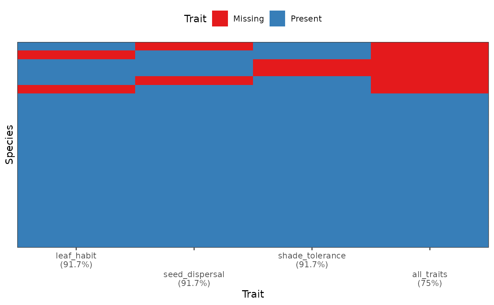
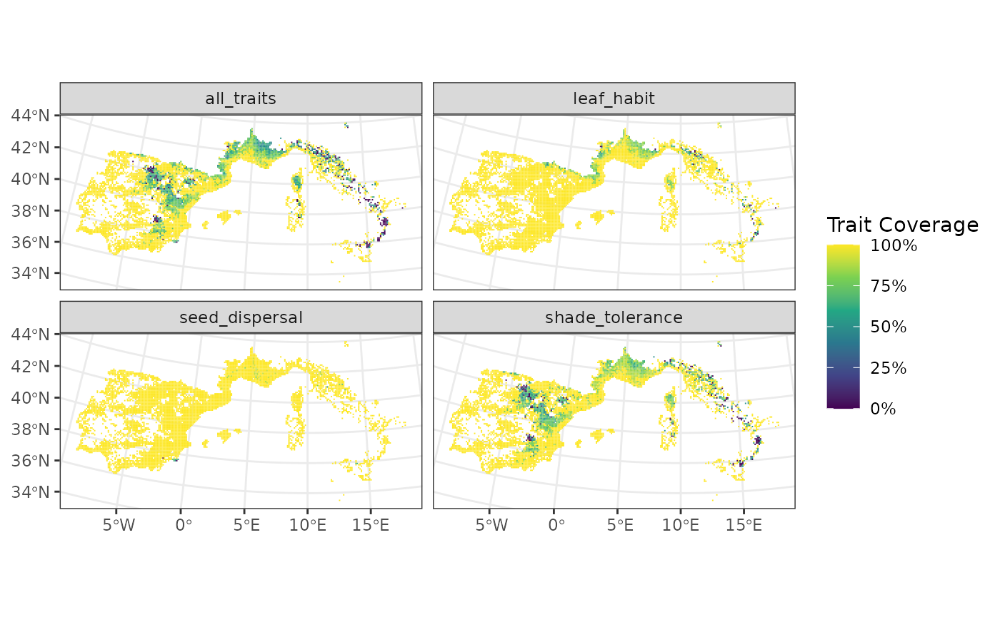
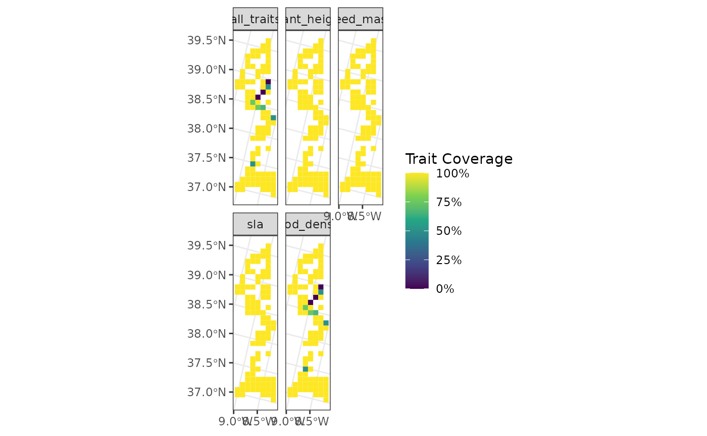
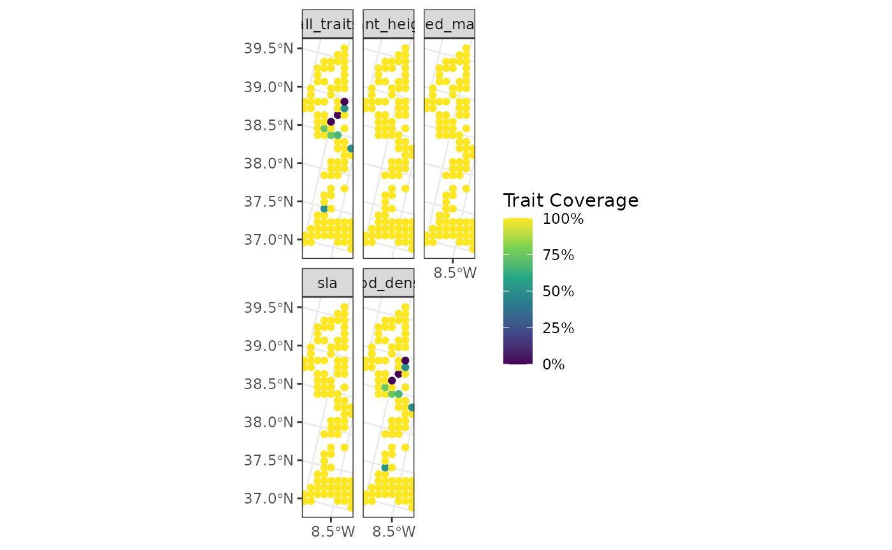
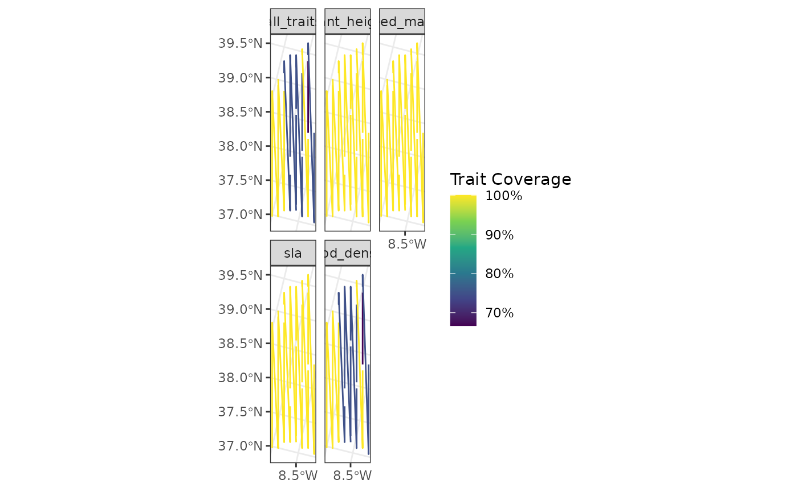
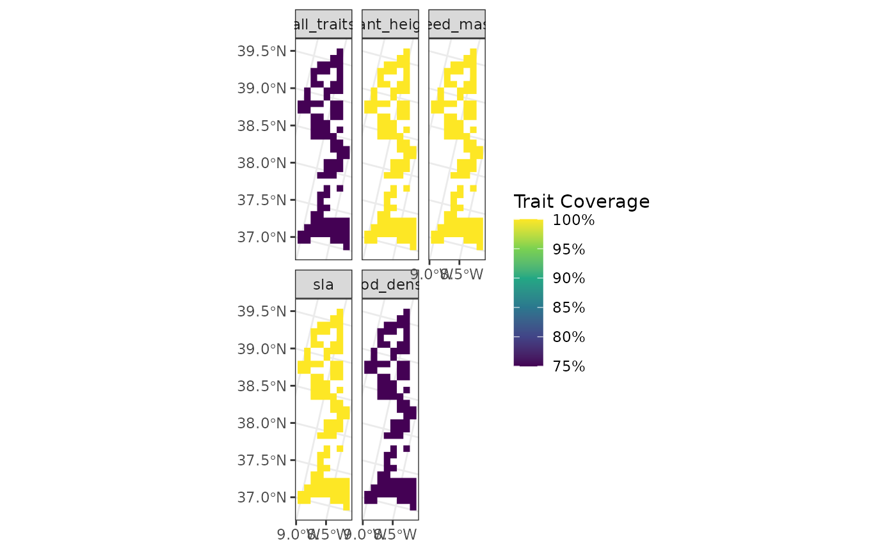

This vignette aims to describe several specific cases in the use of funbiogeo. It provides detailed examples of these uses. If you find your case is missing or if you have additional questions, please open an issue.
Working with Categorical Traits
Traits are not always continuous. While funbiogeo has been thought mainly to work with continuous trait data, it can also work with categorical trait data. This section describes how to use funbiogeo to work with categorical traits.
The default dataset provided in funbiogeo is an extract of the WOODIV database,
describing the diversity of Mediterrannean trees. It contains data for
28 species. To focus on categorical traits, we here propose to add three
more traits for each species: its leaf habit (whether is deciduous or
not?), its seed dispersal mode, and its shade tolerance. The next chunk
gives these traits for the 24 species. We coded seed dispersal as a
categorical trait with two modalities "anemochory" and
"endozoochory". We coded shade tolerance as a categorical
traits with five ordered levels "very_intolerant",
"intolerant", "moderately_tolerant",
"tolerant", and "very_tolerant". We first give
the complete dataset, and then randomly remove data points to show the
abilities of funbiogeo to display missing categorical traits.
woodiv_cat <- data.frame(
species = c(
'AALB', 'ACEP', 'ANEB', 'APIN', 'CLIB', 'CSEM', 'JCOM', 'JDEL', 'JMAC',
'JNAV', 'JOXY', 'JPHO', 'JTHU', 'PBRU', 'PHAL', 'PHEL', 'PINI', 'PMUG',
'PPIA', 'PPIR', 'PSYL', 'PUNC', 'TART', 'TBAC'
),
leaf_habit = c("evergreen"),
seed_dispersal = c(
"anemochory", "anemochory", "anemochory", "anemochory", "anemochory",
"anemochory", "endozoochory", "endozoochory", "endozoochory",
"endozoochory", "endozoochory", "endozoochory", "endozoochory",
"anemochory", "anemochory", "anemochory", "anemochory", "anemochory",
"endozoochory", "anemochory", "anemochory", "anemochory", "anemochory",
"endozoochory"
),
shade_tolerance = c(
"tolerant", "moderately_tolerant", "moderately_tolerant",
"moderately_tolerant", "moderately_tolerant", "intolerant", "intolerant",
"intolerant", "intolerant", "intolerant", "intolerant", "intolerant",
"intolerant", "very_intolerant", "very_intolerant", "intolerant",
"intolerant", "intolerant", "intolerant", "intolerant", "intolerant",
"intolerant", "very_intolerant", "very_tolerant"
)
)
head(woodiv_cat)
#> species leaf_habit seed_dispersal shade_tolerance
#> 1 AALB evergreen anemochory tolerant
#> 2 ACEP evergreen anemochory moderately_tolerant
#> 3 ANEB evergreen anemochory moderately_tolerant
#> 4 APIN evergreen anemochory moderately_tolerant
#> 5 CLIB evergreen anemochory moderately_tolerant
#> 6 CSEM evergreen anemochory intolerantThen to simulate missing trait data, we randomly remove 20% of the values:
# Randomly removes 20% of the values
set.seed(20260411)
woodiv_cat_na <- apply(
woodiv_cat[, 2:4], 2, function(x) {x[sample( c(1:24), floor(24/10))] <- NA; x}
)
woodiv_cat_na <- as.data.frame(woodiv_cat_na)
woodiv_cat_na$species <- woodiv_cat$species
woodiv_cat_na <- woodiv_cat_na[, c(4, 1:3)]
woodiv_cat_na$shade_tolerance <- factor(
woodiv_cat_na$shade_tolerance,
levels = c("very_intolerant", "intolerant", "moderately_tolerant",
"tolerant", "very_tolerant"),
ordered = TRUE
)
head(woodiv_cat_na)
#> species leaf_habit seed_dispersal shade_tolerance
#> 1 AALB <NA> anemochory tolerant
#> 2 ACEP evergreen <NA> moderately_tolerant
#> 3 ANEB evergreen anemochory moderately_tolerant
#> 4 APIN evergreen anemochory moderately_tolerant
#> 5 CLIB evergreen anemochory moderately_tolerant
#> 6 CSEM evergreen anemochory intolerantWe can now use all of the functions of funbiogeo as with continuous trait data:
# Show trait completeness overall
fb_plot_species_traits_completeness(woodiv_cat_na)
# Map site completeness per trait
fb_map_site_traits_completeness(
woodiv_locations, woodiv_site_species, woodiv_cat_na
)
Note: the only two functions that won’t work with
categorical traits are fb_cwm() which computes an
abundance-weighted trait average, and
fb_plot_trait_correlation() which displays trait-trait
correlations.
Considering Intraspecific Variation
Trait-based ecology tends to present its frameworks and analyses with species average traits, most of its concepts can, however, apply to intraspecific trait variation, funbiogeo is no different. All of the examples, including the dataset provided with the package, show species average traits. In this section, we detail how to work with data that include intraspecific variation within funbiogeo. This should be fairly similar to what’s possible across other functional diversity R packages.
To include intraspecific variation, the user has to index species
within specific sites. For example, if they are three individuals of
Abies alba in site A, then the user has to provide
different names to the different individuals like
Abies_alba_1, Abies_alba_2, and
Abies_alba_3. These names have to be reused consistently
across objects site_species, species_traits,
and species_categories. As such, the user can define as
fine as possible intraspecific variation. It is also possible to provide
individual trait value for one or several sites and species average
trait for the rest of the sites, following the same idea as long as the
naming of species and invidivuals is consistent across objects. In this
case, the specified individuals will be counfounded as distinct species
in trait completeness plots.
Sites of Arbitrary Shapes
funbiogeo contains function that requires site-level data. A “site”
is here defined as any geographic grain in which the studied organisms
occur. Depending on the underlying scientific question, a site could be
a single geographic point, for example marking a precise sampled
location, or it could be a polygon (e.g., the area of a protected area),
or a (multi-)line (e.g., a transect or a sampling route), or a square in
a grid (e.g., through a sampling grid). The fb_map_*()
functions in funbiogeo are agnostic to the shape of the sites, meaning
they will work whatever the nature of the sites. The outputs will be
adapted to the nature of the sites. In this section, we will show
examples with sites of different types and see how this affects the
output given by funbiogeo mapping functions.
We will first select the 100 first sites in the
woodiv_locations object:
sampled_sites <- woodiv_locations[1:100,]
fb_map_site_traits_completeness(
sampled_sites, woodiv_site_species, woodiv_traits
)
We will now convert the sites to points by taking the centroid of
sites and use fb_map_*() functions to see how it will
affect their outputs:
# Convert all the sites into 'POINT' geometry
points_sites <- sf::st_centroid(sampled_sites)
#> Warning: st_centroid assumes attributes are constant over geometries
points_sites
#> Simple feature collection with 100 features and 2 fields
#> Geometry type: POINT
#> Dimension: XY
#> Bounding box: xmin: 2635000 ymin: 1745000 xmax: 2705000 ymax: 2045000
#> Projected CRS: ETRS89-extended / LAEA Europe
#> First 10 features:
#> site country geometry
#> 1 26351755 Portugal POINT (2635000 1755000)
#> 2 26351765 Portugal POINT (2635000 1765000)
#> 4 26351955 Portugal POINT (2635000 1955000)
#> 5 26351965 Portugal POINT (2635000 1965000)
#> 6 26451755 Portugal POINT (2645000 1755000)
#> 7 26451765 Portugal POINT (2645000 1765000)
#> 8 26451775 Portugal POINT (2645000 1775000)
#> 10 26451955 Portugal POINT (2645000 1955000)
#> 11 26451965 Portugal POINT (2645000 1965000)
#> 12 26451975 Portugal POINT (2645000 1975000)
# Map the sites
fb_map_site_traits_completeness(
points_sites, woodiv_site_species, woodiv_traits
)
As seen above, the sites are now actual points instead of the original squares. The function will adapt to the geometry of the sites provided by the user.
But funbiogeo can accommodate sites of any geometry, to show sites that represent lines, we will group sites into lines of sites and use the same function.
lines_sites <- points_sites
# Assign groups to create 10 lines
site_ids <- data.frame(
site = points_sites$site,
group_line = rep(1:10, each = 10)
)
# Group sites geographically
lines_sites <- lines_sites |>
dplyr::inner_join(site_ids, by = "site") |>
dplyr::group_by(group_line) |>
dplyr::summarise(country = unique(country)) |>
sf::st_cast("LINESTRING") |>
dplyr::rename(site = group_line)
lines_sites
#> Simple feature collection with 10 features and 2 fields
#> Geometry type: LINESTRING
#> Dimension: XY
#> Bounding box: xmin: 2635000 ymin: 1745000 xmax: 2705000 ymax: 2045000
#> Projected CRS: ETRS89-extended / LAEA Europe
#> # A tibble: 10 × 3
#> site country geometry
#> <int> <chr> <LINESTRING [m]>
#> 1 1 Portugal (2635000 1755000, 2635000 1765000, 2635000 1955000, 2635000 1…
#> 2 2 Portugal (2645000 1985000, 2655000 1765000, 2655000 1775000, 2655000 1…
#> 3 3 Portugal (2655000 1995000, 2655000 2005000, 2655000 2015000, 2665000 1…
#> 4 4 Portugal (2665000 1855000, 2665000 1915000, 2665000 1925000, 2665000 1…
#> 5 5 Portugal (2675000 1775000, 2675000 1785000, 2675000 1805000, 2675000 1…
#> 6 6 Portugal (2675000 1935000, 2675000 1975000, 2675000 1985000, 2675000 2…
#> 7 7 Portugal (2685000 1865000, 2685000 1875000, 2685000 1895000, 2685000 1…
#> 8 8 Portugal (2685000 2025000, 2685000 2035000, 2695000 1755000, 2695000 1…
#> 9 9 Portugal (2695000 1895000, 2695000 1905000, 2695000 1925000, 2695000 1…
#> 10 10 Portugal (2695000 2025000, 2695000 2035000, 2695000 2045000, 2705000 1…
# Group sites in woodiv_site_species
woodiv_site_lines <- woodiv_site_species |>
dplyr::inner_join(site_ids) |>
dplyr::select(-site) |>
dplyr::rename(site = group_line) |>
dplyr::group_by(site) |>
dplyr::summarise(
dplyr::across(dplyr::everything(), \(x) as.numeric(sum(x) > 0))
)
#> Joining with `by = join_by(site)`
fb_map_site_traits_completeness(
lines_sites, woodiv_site_lines, woodiv_traits
)
The geometry now displays the lines, even though they are not the most perfect representation of the actual sites, but it shows the capabilities of funbiogeo.
Similarly to the upscaling vignette, the map functions can also accommodate larger polygons, for example by aggregating sites per country.
# Convert all sites to a single polygon
polygon_sites <- sampled_sites |>
dplyr::group_by(country) |>
dplyr::summarise(country = unique(country)) |>
sf::st_cast("MULTIPOLYGON") |>
dplyr::rename(site = country)
# Compute new site-species object
woodiv_site_polygon <- woodiv_site_species |>
subset(site %in% sampled_sites$site) |>
dplyr::select(-site) |>
dplyr::mutate(site = "Portugal") |>
dplyr::group_by(site) |>
dplyr::summarise(
dplyr::across(dplyr::everything(), \(x) as.numeric(sum(x) > 0))
)
# Display the map
fb_map_site_traits_completeness(
polygon_sites, woodiv_site_polygon, woodiv_traits
)
Now all of the sites are merged as a single big polygon.
Have fun with funbiogeo and if you have a question, an issue, or a suggestion, make sure to fill a report on GitHub.